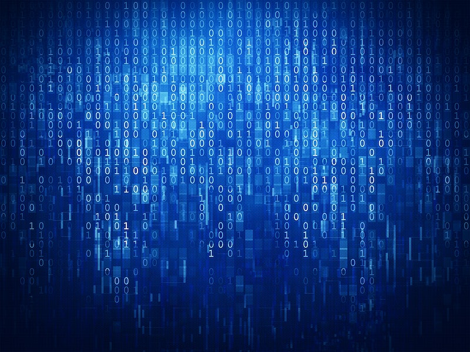

Programação
Dia 1
09/09
Integração: 7h - 7h20
7h20 - 8h
Introdução ao Desenvolvimento Web
Palestrante: Sheryl Sandberg
Café da Manhã: 8h - 8h30
8h30 - 10h
HTML
Palestrante: Bill Gates
10h - 11h
Aplicação dos Conceitos de HTML
Responsável: Bill Gates
11h - 12h30
CSS
Palestrante: Susan Wojcicki
Almoço: 12h30 - 13h30
13h30 - 14h30
Aplicação dos Conceitos de CSS
Responsável: Susan Wojcicki
14h30 - 16h
Fundamentos de JavaScript
Palestrante: Mark Zuckerberg
16h - 17h
Trabalhando com formulários e APIs
Palestrante: Mary Barra
Café da tarde: 17h - 17h30
17h30 - 18h30
Estrutura de Dados e Algoritmos
Palestrante: Marissa Mayer
18h30 - 19h30
Projeto: Desenvolvimento de um Site Básico
Responsável: Mary Barra e Marissa Mayer
Encerramento do Primeiro Dia: 19h30 - 20h
Dia 2
10/09
Abertura: 7h - 7h10
7h10 - 9h
CSS Avançado
Palestrante: Susan Wojcicki
Café da Manhã: 9h - 9h30
9h30 - 11h30
JavaScript Avançado
Palestrante: Mark Zuckerberg
11h30 - 12h30
Aplicação dos Conceitos
Responsável: Mark Zuckerberg
Almoço: 12h30 - 13h30
13h30 - 14h30
Bibliotecas e Frameworks JavaScript
Palestrante: Mary Barra
14h30 - 15h30
Criando aplicativos web
Palestrante: Mary Barra
15h30 - 16h30
Testes e depuração
Palestrante: Marissa Mayer
Café da tarde: 16h30 - 17h
17h - 19h
Projeto Final
Responsável: Mark Zuckerberg, Mary Barra e Marissa Mayer
Encerramento do Evento: 19h - 19h30